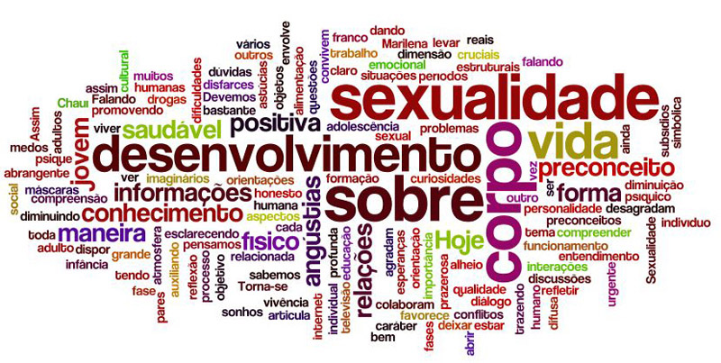
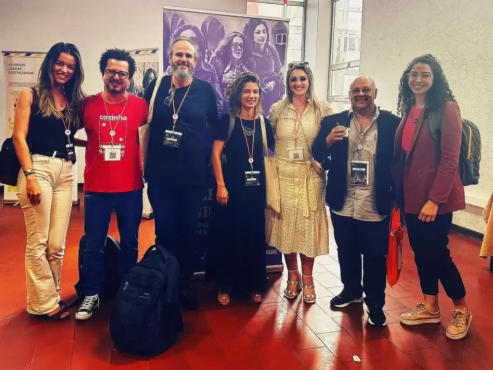
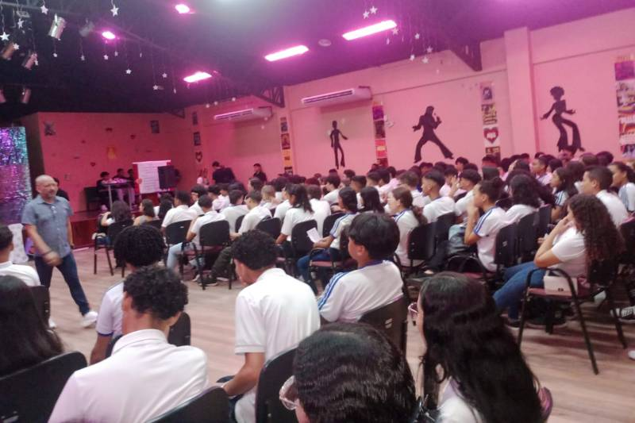

Educação Sexual
Importância da educação sexual nas escolas
A educação sexual nas escolas é fundamental para promover o conhecimento sobre o corpo, a saúde reprodutiva
e as relações interpessoais saudáveis. Ela ajuda a prevenir doenças sexualmente transmissíveis, gravidezes
precoces e abusos, ao oferecer informações corretas e baseadas em ciência. Além disso, contribui para a
desconstrução de tabus e mitos relacionados à sexualidade, incentivando o respeito à diversidade e à
igualdade de gênero. Ao abordar questões emocionais e psicológicas, a educação sexual prepara os jovens para
tomarem decisões conscientes e responsáveis sobre sua vida sexual e afetiva.
A puberdade é marcada por diversas mudanças físicas e emocionais que ocorrem à medida que o corpo se
desenvolve para a vida adulta. Entre as mudanças físicas, incluem-se o crescimento dos pelos corporais, o
aumento de estatura, o desenvolvimento dos órgãos sexuais e, no caso das meninas, o início da menstruação.
No aspecto emocional, há uma maior intensidade de sentimentos, variações de humor e o despertar do interesse
sexual. Essas mudanças também impactam a autoestima e a relação com o corpo, além de aumentarem a busca por
independência e a construção da identidade. Esse período pode gerar inseguranças, mas é uma fase natural do
crescimento humano.

Prevenção de Infecções Sexualmente Transmissíveis (ISTs)
A prevenção de Infecções Sexualmente Transmissíveis (ISTs) é essencial para a saúde sexual e reprodutiva. O uso correto e consistente de preservativos, tanto masculinos quanto femininos, é uma das formas mais eficazes de evitar a transmissão de ISTs. Além disso, a educação sexual é fundamental para conscientizar as pessoas sobre os riscos, sintomas e formas de prevenção. A vacinação, como contra o HPV e a hepatite B, também desempenha um papel importante. Fazer exames regulares e conhecer o estado de saúde do parceiro são medidas preventivas recomendadas. A prevenção é crucial para evitar complicações sérias, como infertilidade e transmissão a parceiros.
Métodos contraceptivos
Os métodos contraceptivos variam em tipos e formas de atuação. Métodos de barreira, como preservativos, impedem a passagem de espermatozoides e protegem contra ISTs. Métodos hormonais, como pílulas, adesivos e implantes, agem alterando o ciclo menstrual para evitar a ovulação. Dispositivos intrauterinos (DIU), hormonais ou de cobre, são inseridos no útero e previnem a fecundação a longo prazo. Métodos comportamentais, como o coito interrompido e a tabelinha, dependem da observação do ciclo menstrual. Métodos definitivos, como a laqueadura e vasectomia, são cirúrgicos e irreversíveis. Cada tipo tem sua eficácia e deve ser escolhido de acordo com as necessidades e planos reprodutivos individuais.
Gravidez na adolescência
A gravidez na adolescência é um desafio que envolve aspectos físicos, emocionais e sociais. Jovens grávidas enfrentam maior risco de complicações de saúde, como parto prematuro e pré-eclâmpsia, devido à imaturidade do corpo. No campo emocional, podem surgir sentimentos de medo, insegurança e isolamento, além do impacto na autoestima. Socialmente, a gravidez precoce pode prejudicar a continuidade dos estudos e o desenvolvimento profissional, limitando oportunidades futuras. O apoio familiar, a educação sexual e o acesso a métodos contraceptivos são fundamentais para a prevenção e para o acompanhamento adequado em casos de gravidez na adolescência.
Consentimento e relações saudáveis
O consentimento é essencial para relações saudáveis, baseando-se no respeito mútuo e na comunicação clara entre as partes envolvidas. Ele significa que todas as pessoas em uma relação dão permissão consciente e voluntária para qualquer interação, seja emocional, física ou sexual. Relações saudáveis se constroem com confiança, igualdade e a capacidade de expressar limites sem medo. O consentimento deve ser contínuo e pode ser revogado a qualquer momento, reforçando o direito de cada indivíduo sobre seu próprio corpo. Educar sobre consentimento é crucial para prevenir abusos e promover interações respeitosas, seguras e consensuais.
Diversidade sexual e identidade de gênero
A diversidade sexual e a identidade de gênero englobam as várias formas como as pessoas vivenciam sua sexualidade e se identificam em termos de gênero. Orientações sexuais, como heterossexualidade, homossexualidade e bissexualidade, refletem a atração afetiva e sexual por outros. Já a identidade de gênero diz respeito a como a pessoa se identifica, podendo ser cisgênero, quando o gênero corresponde ao sexo biológico, ou transgênero, quando não corresponde. Além disso, há identidades não-binárias, que não se enquadram totalmente em masculino ou feminino. O respeito à diversidade sexual e de gênero é fundamental para combater o preconceito e promover a inclusão, garantindo direitos e dignidade a todos.
Autocuidado e higiene íntima
O autocuidado e a higiene íntima são essenciais para a saúde e o bem-estar geral, especialmente na área genital. A higiene íntima adequada envolve a limpeza suave da região com água e sabonetes neutros, evitando produtos irritantes ou perfumados. É importante manter a área seca e usar roupas íntimas de algodão para prevenir infecções e desconfortos. O autocuidado também inclui a realização de exames regulares e a observação de quaisquer mudanças no corpo, que podem indicar problemas de saúde. Além disso, a promoção de práticas de autocuidado mental e emocional, como o gerenciamento do estresse, contribui para uma vida saudável. Adotar esses hábitos ajuda a fortalecer a autoestima e a confiança pessoal.

Mitos e verdades sobre sexo e sexualidade
Mitos e verdades sobre sexo e sexualidade são frequentemente confundidos e podem afetar a compreensão e a saúde sexual das pessoas. Um dos mitos comuns é que apenas a penetração resulta em prazer sexual, enquanto a verdade é que a sexualidade é ampla e inclui diversas formas de prazer. Outro mito é a ideia de que pessoas com orientações sexuais diferentes não podem ter relacionamentos saudáveis; na realidade, todas as orientações podem ser igualmente satisfatórias. Além disso, a crença de que o sexo só deve ocorrer após o casamento é um conceito cultural e não uma verdade universal. Educar-se sobre esses mitos é crucial para promover uma visão mais saudável e realista da sexualidade, contribuindo para o bem-estar emocional e físico. O conhecimento e a discussão aberta são fundamentais para desmistificar tabus e promover relacionamentos saudáveis.
Saúde mental e sexualidade
A saúde mental e a sexualidade estão intimamente interligadas, pois o bem-estar psicológico influencia a forma como as pessoas experimentam sua sexualidade. Questões de autoestima, traumas passados e estresse podem impactar a vida sexual, levando a dificuldades de intimidade e prazer. Por outro lado, a saúde sexual também afeta a saúde mental; relacionamentos saudáveis e satisfatórios podem promover uma melhor autoestima e reduzir a ansiedade. A educação sexual, que aborda não apenas aspectos físicos, mas também emocionais, é vital para ajudar os indivíduos a desenvolverem uma relação positiva com sua sexualidade. O apoio emocional e psicológico é essencial para lidar com problemas sexuais e construir relações saudáveis. Promover a saúde mental, portanto, é crucial para garantir uma vida sexual plena e satisfatória.
Ultimos acontecimentos no mundo sobre

Menina denuncia tio por estupro após palestra sobre educação sexual na escola e homem é preso no Piauí

Unesp em Araraquara forma profissionais em educação sexual para atuar em diversas áreas
Saúde lança cartilha sobre educação sexual como política de transformação — Ministério da Saúde
